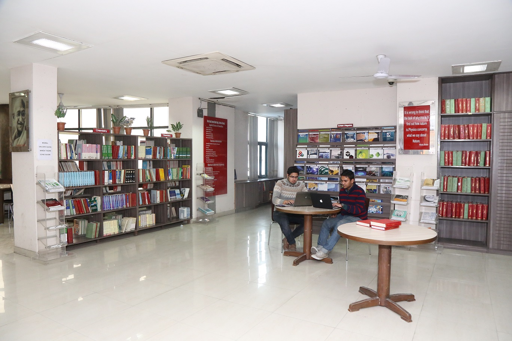

A library is the delivery room for the birth of ideas, a place where history comes to life -Norman Cousins
A library is not a luxury but one of the necessities of life -H.W. Beecher
BPIT library is centrally air conditioned and spacious. The salient features of the library are:

- 1. 42279 books and 6095 titles, including good quality books on Applied Mathematics, Applied Physics, Applied Chemistry, Communication skills, Engineering Mechanics and a wide range standard quality books on Computer Science Engineering, Electronics and Communication Engineering, Information Technology, and Electrical Engineering and graduate and post graduate level books on Management Studies.
- 2. Book Bank facility for all the students.
- 3. 151 chairs in the central position for study.
- 4. 55 good quality hard copy journals.
- 5. DELNET package of on line journals.
- 6. 15 news papers and 10 magazines.
- 7. Separate section for faculty members for study and accessing online journals.
- 8. Separate section for students to access the online journals.
- 9. OPAC facility.